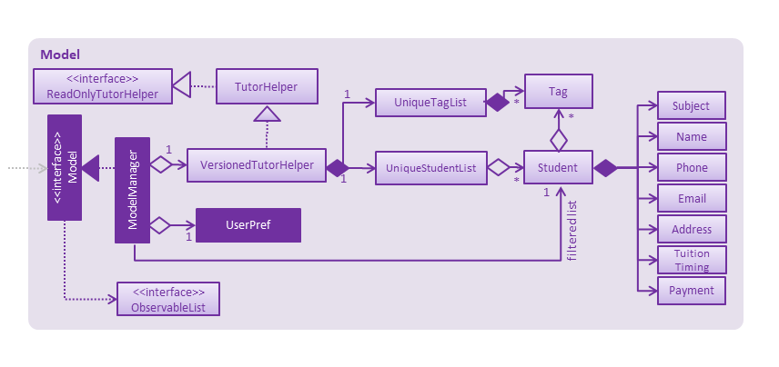
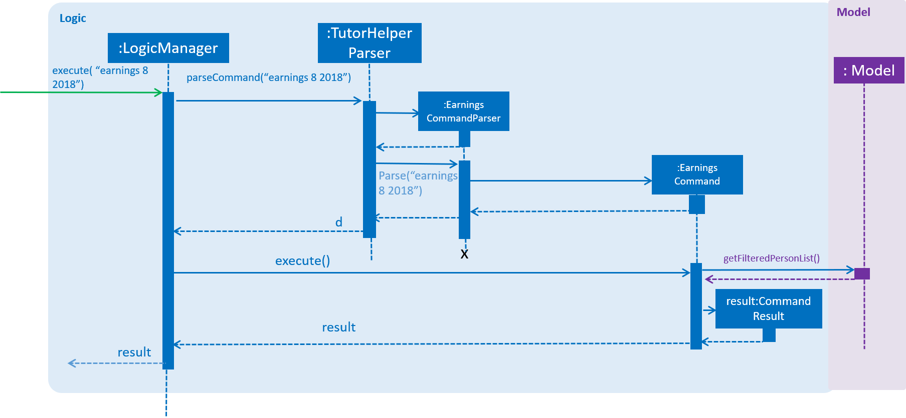
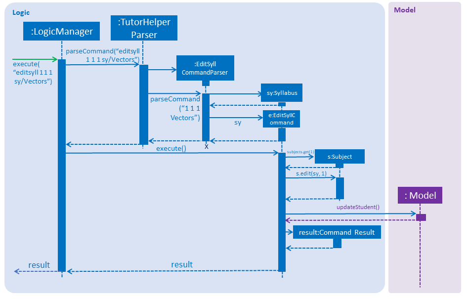

By: CS2103-AY1819S1-W13-4 Since: Aug 2018
- 1. Setting Up
- 2. Design
- 3. Implementation
- 4. Documentation
- 5. Testing
- 6. Dev Ops
- Appendix A: Product Scope
- Appendix B: User Stories
- Appendix C: Use Cases
- Appendix D: Non Functional Requirements
- Appendix E: Glossary
- Appendix F: Instructions for Manual Testing
- F.1. Launch and Shutdown
- F.2. Grouping Students
- F.3. Recording a Payment
- F.4. Editing Payment Records
- F.5. Displaying Earnings
- F.6. Adding a Subject
- F.7. Deleting a Subject
- F.8. Copying a Subject
- F.9. Adding a Syllabus Topic
- F.10. Deleting a Syllabus Topic
- F.11. Editing a Syllabus Topic
- F.12. Marking a Syllabus Topic
1. Setting Up
1.1. Prerequisites
-
JDK
9or laterJDK 10on Windows will fail to run tests in headless mode due to a JavaFX bug. Windows developers are highly recommended to use JDK9. -
IntelliJ IDE
IntelliJ by default has Gradle and JavaFx plugins installed.
Do not disable them. If you have disabled them, go toFile>Settings>Pluginsto re-enable them.
1.2. Setting Up the Project
-
Fork this repo, and clone the fork to your computer
-
Open IntelliJ (if you are not in the welcome screen, click
File>Close Projectto close the existing project dialog first) -
Set up the correct JDK version for Gradle
-
Click
Configure>Project Defaults>Project Structure -
Click
New…and find the directory of the JDK
-
-
Click
Import Project -
Locate the
build.gradlefile and select it. ClickOK -
Click
Open as Project -
Click
OKto accept the default settings -
Open a console and run the command
gradlew processResources(Mac/Linux:./gradlew processResources). It should finish with theBUILD SUCCESSFULmessage.
This will generate all resources required by the application and tests. -
Open
XmlAdaptedStudent.javaandMainWindow.javaand check for any code errors-
Due to an ongoing issue with some of the newer versions of IntelliJ, code errors may be detected even if the project can be built and run successfully
-
To resolve this, place your cursor over any of the code section highlighted in red. Press ALT+ENTER, and select
Add '--add-modules=…' to module compiler optionsfor each error
-
-
Repeat this for the test folder as well (e.g. check
XmlUtilTest.javaandHelpWindowTest.javafor code errors, and if so, resolve it the same way)
1.3. Verifying the Setup
-
Run the
tutorhelper.MainAppand try a few commands -
Run the tests to ensure they all pass.
1.4. Configurations to Apply before Writing Code
1.4.1. Configuring the Coding Style
This project follows oss-generic coding standards. IntelliJ’s default style is mostly compliant with ours but it uses a different import order from ours. To rectify,
-
Go to
File>Settings…(Windows/Linux), orIntelliJ IDEA>Preferences…(macOS) -
Select
Editor>Code Style>Java -
Click on the
Importstab to set the order-
For
Class count to use import with '*'andNames count to use static import with '*': Set to999to prevent IntelliJ from contracting the import statements -
For
Import Layout: The order isimport static all other imports,import java.*,import javax.*,import org.*,import com.*,import all other imports. Add a<blank line>between eachimport
-
Optionally, you can follow the UsingCheckstyle.adoc document to configure Intellij to check style-compliance as you write code.
1.4.2. Updating Documentation to Match your Fork
After forking the repo, the documentation will still refer to the CS2103-AY1819S1-W13-4/main repo.
If you plan to develop this fork as a separate product (i.e. instead of contributing to CS2103-AY1819S1-W13-4/main), you should do the following:
-
Configure the site-wide documentation settings in
build.gradle, such as thesite-name, to suit your own project. -
Replace the URL in the attribute
repoURLinDeveloperGuide.adocandUserGuide.adocwith the URL of your fork.
1.4.3. Setting up CI
Set up Travis to perform Continuous Integration (CI) for your fork. See UsingTravis.adoc to learn how to set it up.
After setting up Travis, you can optionally set up coverage reporting for your team fork (see UsingCoveralls.adoc).
| Coverage reporting could be useful for a team repository that hosts the final version but it is not that useful for your personal fork. |
Optionally, you can set up AppVeyor as a second CI (see UsingAppVeyor.adoc).
| Having both Travis and AppVeyor ensures your App works on both Unix-based platforms and Windows-based platforms (Travis is Unix-based and AppVeyor is Windows-based) |
1.4.4. Getting Started with Coding
When you are ready to start coding, get some sense of the overall design by reading Section 2.1, “Architecture”.
2. Design
2.1. Architecture

The Architecture Diagram given above explains the high-level design of the App. Given below is a quick overview of each component.
The .pptx files used to create diagrams in this document can be found in the diagrams folder. To update a diagram, modify the diagram in the pptx file, select the objects of the diagram, and choose Save as picture.
|
Main has only one class called MainApp. It is responsible for,
-
At app launch: Initializes the components in the correct sequence, and connects them up with each other.
-
At shut down: Shuts down the components and invokes cleanup method where necessary.
Commons represents a collection of classes used by multiple other components. Two of those classes play important roles at the architecture level.
-
EventsCenter: This class (written using Google’s Event Bus library) is used by components to communicate with other components using events (i.e. a form of Event Driven design) -
LogsCenter: Used by many classes to write log messages to the App’s log file.
The rest of the App consists of four components.
Each of the four components
-
Defines its API in an
interfacewith the same name as the Component. -
Exposes its functionality using a
{Component Name}Managerclass.
For example, the Logic component (see the class diagram given below) defines it’s API in the Logic.java interface and exposes its functionality using the LogicManager.java class.
Events-Driven Nature of the Design
The Sequence Diagram below shows how the components interact for the scenario where the tutor issues the command delete 1.
delete 1 command (part 1)
Note how the Model simply raises a TutorHelperChangedEvent when the TutorHelper data are changed, instead of asking the Storage to save the updates to the hard disk.
|
The diagram below shows how the EventsCenter reacts to that event, which eventually results in the updates being saved to the hard disk and the status bar of the UI being updated to reflect the 'Last Updated' time.
delete 1 command (part 2)
Note how the event is propagated through the EventsCenter to the Storage and UI without Model having to be coupled to either of them. This is an example of how this Event Driven approach helps us reduce direct coupling between components.
|
The sections below give more details of each component.
2.2. UI Component
API : Ui.java
The UI consists of a MainWindow that is made up of parts e.g.CommandBox, ResultDisplay, StudentListPanel, StatusBarFooter, BrowserPanel etc. All these, including the MainWindow, inherit from the abstract UiPart class.
The UI component uses JavaFx UI framework. The layout of these UI parts are defined in matching .fxml files that are in the src/main/resources/view folder. For example, the layout of the MainWindow is specified in MainWindow.fxml
The UI component,
-
Executes tutor’s commands using the
Logiccomponent. -
Binds itself to some data in the
Modelso that the UI can auto-update when data in theModelchange. -
Responds to events raised from various parts of the App and updates the UI accordingly.
2.3. Logic Component
API :
Logic.java
-
Logicuses theTutorHelperParserclass to parse the tutor’s command. -
This results in a
Commandobject which is executed by theLogicManager. -
The command execution can affect the
Model(e.g. adding a student) and/or raise events. -
The result of the command execution is encapsulated as a
CommandResultobject which is passed back to theUi.
Given below is the Sequence Diagram for interactions within the Logic component for the execute("delete 1") API call.
delete 1 Command2.4. Model Component
API : Model.java
The Model,
-
stores a
UserPrefobject that represents the user’s preferences. -
stores the TutorHelper data.
-
exposes an unmodifiable
ObservableList<Student>that can be 'observed' e.g. the UI can be bound to this list so that the UI automatically updates when the data in the list change. -
does not depend on any of the other three components.
As a more OOP model, we can store a Tag list in TutorHelper, which Student can reference. This would allow TutorHelper to only require one Tag object per unique Tag, instead of each Student needing their own Tag object. An example of how such a model may look like is given below. |
2.5. Storage Component
API : Storage.java
The Storage component,
-
can save
UserPrefobjects in json format and read it back. -
can save the TutorHelper data in xml format and read it back.
2.6. Common Classes
Classes used by multiple components are in the tutorhelper.commons package.
3. Implementation
This section describes some noteworthy details on how certain features are implemented.
3.1. Group Students Feature
3.1.1. Current Implementation
Classes related to Group and its functionality is listed below:
-
TutorHelperParser— Creates a GroupCommandParser object and parses the user’s input. -
GroupCommandParser— Analyses the input, creates a predicate based on the input and returns a GroupCommand object with the predicate as the argument. -
GroupCommand— Filters the list based on the predicate, sorts the list and displays it to the user.
Given below is an example usage scenario and how the group mechanism behaves at each step.
Step 1. The user launches the application for the first time.
Step 2. Assuming that the application isn’t empty, the user executes 'group Monday' command to group all students with a class on Monday. The group command will be called by GroupCommandParser.parse(), parsing the argument to check against. The application will check the list and display all students with classes on Monday, sorted based on the earliest timing.
The user can execute list to re-display the full list of students again.
|
The user can execute undo to undo the sorting done to the list.
|
The group command is CASE-SENSITIVE. E.g. Passing MONDAY as an input instead of Monday will throw an error.
|
| Only 12-hr timings are valid. |
The following sequence diagram shows how the group operation works for day parameter and time parameter:

3.2. Record Payment Feature
3.2.1. Current implementation
Classes that are related to Payment and their functionality are as listed below:
-
TutorHelperParser— Creates a PayCommandParser object and calls parse method in object to parse user’s argument input. -
PayCommandParser— Analyses the input, checks for any violation of syntax and returns a PayCommand object with the Payment object as the para. -
PayCommand— Calls on methods in VersionedTutorHelper to update new Payments made. -
Payment— -Contains fields to store student id, amount paid, month of payment and year of payment.
Given below is an example usage scenario and how the payment mechanism behaves at each step.
Step 1. The tutor launches the application and wants to record a payment for his/her student called Alice.
Step 2. He/she makes a mental note of Alice’s student index as listed in the left side of the application.
Step 3. Lets say, Alice has student id 2. The payment she made was $400 for the month and year of November 2018. He/she proceeds to key in the command in the following format: paid 2 400 11 2018
Step 4. Assuming that each argument given is a valid input, the system will perform the Payment command.
Step 5. The system will locate Alice from the student list and update payment field for Alice.
Step 6. Now, payment details have been updated and the tutor will be able to see a successful payment message under the command box.
Step 7. The tutor may also choose to view the details from browser panel by clicking on Alice tab on the left. Payments will be displayed.
| Payment list will keep up to 5 payments at any one time. When the 6th payment is added, the payment list will remove the oldest payment record. |
| The maximum amount of payment that can be made each time is $10 000. |
The diagram below illustrates the sequence diagram.

3.3. Edit Payment Record Feature
3.3.1. Current implementation
Classes that are related to edit Payment and their functionality are as listed below:
-
TutorHelperParser— Creates a PayCommandParser object and calls parse method in object to parse user’s argument input. -
PayCommandParser— Analyses the input, checks for any violation of syntax and returns a PayCommand object with the Payment object as the para. -
PayCommand— Calls on methods in VersionedTutorHelper to update new Payments made. -
Payment— -Contains fields to store student id, amount paid, month of payment and year of payment.
Given below is an example usage scenario and how the payment mechanism behaves at each step.
Step 1. The tutor launches the application and wants to edit a payment for his/her student called Alice.
Step 2. He/she makes a mental note of Alice’s student index as listed in the left side of the application.
Step 3. Lets say, Alice has student id 2. The payment that the tutor wants to update is $300 for the month and year of November 2018. He/she proceeds to key in the command in the following format: paid 2 300 11 2018
Step 4. Assuming that each argument given is a valid input, the system will perform the Payment command.
Step 5. The system will locate Alice from the student list.
Step 5a. The system will check that payment for the month and year of November 2018 has been recorded for Alice before, hence it will proceed to update the payment amount instead of creating a new payment entry.
Step 6. Now, payment details have been updated and the tutor will be able to see a successful edit payment message under the command box.
Step 7. The tutor may also choose to view the details from browser panel by clicking on Alice tab on the left. Payments will be displayed.
| Payment list will keep up to 5 payments at any one time. When the 6th payment is added, the payment list will remove the oldest payment record. |
| The maximum amount of payment that can be made each time is $10 000. |
The diagram below illustrates the sequence diagram.

3.4. Display Earnings Feature
3.4.1. Current implementation
The classes related to Earnings are EarningsCommand, EarningsCommandParser.
-
TutorHelperParser— Creates a PayCommandParser object and calls parse method in object to parse user’s argument input. -
EarningsCommandParser--Takes in users' input and checks if it adheres to the required format. Returns a EarningsCommand with the month and year passed in. -
EarningsCommand— Takes in month and year as inputs in its constructor. In Execute() method, it performs the checking of all recorded payments and returns the total payments received for that specified month and year.
Given below is an example usage scenario and how the earning mechanism behaves at each step.
Step 1. The tutor launches the application and wants to view his/her earnings for the month of November 2018.
Step 2. He/she enters input in the format of: earnings 11 2018
Step 3. Assuming arguments are correct, the system executes Earnings command.
Step 4. The list of students from the model is obtained and the system proceeds to search for Payment records made for that requested month and year.
Step 5. The tutor will then see a message below the command text box, showing the earnings for the requested month and year.
The diagram below illustrates the sequence diagram.
| Default value for earnings of an unrecorded month and year will be $0. |

3.5. Copy Subject Feature
3.5.1. Current Implementation
The copy subject command operates by making a duplicate of the selected subject of the student and adds it the other student.
| If the other student already has the same subject, append the content of the subject instead. State of each syllabus is also copied. Duplicate syllabus will not be added. |
Classes related to copy command and its functionality are listed below:
-
TutorHelperParser— Creates CopySubCommandParser which parses the input from user. -
CopySubCommandParser— Parses user’s input into proper argument and creates CopySubCommand -
CopySubCommand— Updates the target student based on the argument -
SubjectsUtil— Manage the finding and copying aspect of copysub command.
Given below is an example usage scenario with 2 possible outcomes and how to copy function addresses each case.
Step 1. The user launches the application for the first time.
Step 2. Assuming that the application isn’t empty, the user executes copysub 1 2 4.
Step 3. Assuming that each argument given is a valid input, the system will perform the copysub command.
Step 4. The system will locate the first student from the student list, and make a separate copy of the second subject stored under the student data.
Step 5. The system will locate the fourth student from the student list, and make a decision.
-
Step 5a. If the same subject as second subject in Step 4, system will append the content of subject of second subject into the fourth student.
-
Step 5b. If there is no subject same as second subject in Step 4, system will add the second subject as a new subject under the fourth student.
The process is described with sequence diagram below:
3.6. Add / Delete Subject Feature
3.6.1. Implementation
The add / delete subject mechanism is facilitated with TutorHelperParser.
Classes related to the functionality of the mechanism are listed below:
-
TutorHelperParser— Creates aAddSubCommandParser/DeleteSubCommandParserobject and parses the user’s input. -
AddSubCommandParser/DeleteSubCommandParser— Analyses user input to create a correspondingCommandobject. -
AddSubCommand/DeleteSubCommand— Execution results in addition / deletion of a subject for a specified student index.
Given below is an example usage scenario of how the add / delete subject mechanism behaves at each step.
Add Subject
Step 1. The user launches the application.
Step 2. The tutor executes a command of the format addsub STUDENT_INDEX s/SUBJECT on the CLI.
Step 3. The arguments are parsed by AddSubCommandParser, which produces an instance of AddSubCommand.
Step 4. AddSubCommand.execute() is called, and the supplied subject is added for the student at the specified student index by TutorHelper.
Delete Subject
Step 1. The user launches the application.
Step 2. The tutor executes a command of the format deletesub STUDENT_INDEX SUBJECT_INDEX on the CLI.
Step 3. The arguments are parsed by DeleteSubCommandParser, which produces an instance of DeleteSubCommand.
Step 4. DeleteSubCommand.execute() is called, and the subject at the specified subject index of the student at the specified student index is deleted by TutorHelper.
The TutorHelper has to have at least 1 student as a precondition for both addsub and deletesub.
|
deletesub requires the student at the specified student index to have at least two subjects. After deletion, a student cannot have 0 subjects.
|
The following sequence diagram shows how the addsub operation works:
The following sequence diagram shows how the deletesub operation works:

3.7. Edit Syllabus Topic Feature
3.7.1. Current Implementation
Classes that are related to edit syllabus and their functionality are as listed below:
* TutorHelperParser — Creates a EditSyllCommandParser object and calls parse method in object to parse user’s argument input.
* EditSyllCommandParser — Analyses the input, checks for any violation of syntax and returns a EditSyllCommand object with the student,subject,syllabus index object as well as the new Syllabus object as the argument.
* EditSyllCommand — Locates the corresponding syllabus to update and calls corresponding subject to edit syllabus.
* Subject — Locates and edits existing syllabus entry with new syllabus entry
Given below is an example usage scenario and how the earning mechanism behaves at each step.
Step 1. The tutor launches the application.
Step 2. He/she executes the command in the format editsyll STUDENT_INDEX SUBJECT_INDEX SYLLABUS_INDEX sy/SYLLABUS on the CLI.
Step 3. The arguments are parsed by EditSyllCommandParser, which produces an instance of EditSyllCommand.
Step 4. EditSyllCommand.execute() is called, and the syllabus at the specified subject index and syllabus index of the student at the specified student index is edited by TutorHelper.
The TutorHelper has to have at least 1 student as a precondition for editsyll.
|
The diagram below shows how the editsyll operation works:

3.8. Logging
We are using java.util.logging package for logging. The LogsCenter class is used to manage the logging levels and logging destinations.
-
The logging level can be controlled using the
logLevelsetting in the configuration file (See Section 3.9, “Configuration”) -
The
Loggerfor a class can be obtained usingLogsCenter.getLogger(Class)which will log messages according to the specified logging level -
Currently log messages are output through:
Consoleand to a.logfile.
Logging Levels
-
SEVERE: Critical problem detected which may possibly cause the termination of the application -
WARNING: Can continue, but with caution -
INFO: Information showing the noteworthy actions by the App -
FINE: Details that is not usually noteworthy but may be useful in debugging e.g. print the actual list instead of just its size
3.9. Configuration
Certain properties of the application can be controlled (e.g App name, logging level) through the configuration file (default: config.json).
4. Documentation
We use asciidoc for writing documentation.
| We chose asciidoc over Markdown because asciidoc, although a bit more complex than Markdown, provides more flexibility in formatting. |
4.1. Editing Documentation
See UsingGradle.adoc to learn how to render .adoc files locally to preview the end result of your edits.
Alternatively, you can download the AsciiDoc plugin for IntelliJ, which allows you to preview the changes you have made to your .adoc files in real-time.
4.2. Publishing Documentation
See UsingTravis.adoc to learn how to deploy GitHub Pages using Travis.
4.3. Converting Documentation to PDF format
We use Google Chrome for converting documentation to PDF format, as Chrome’s PDF engine preserves hyperlinks used in webpages.
Here are the steps to convert the project documentation files to PDF format.
-
Follow the instructions in UsingGradle.adoc to convert the AsciiDoc files in the
docs/directory to HTML format. -
Go to your generated HTML files in the
build/docsfolder, right click on them and selectOpen with→Google Chrome. -
Within Chrome, click on the
Printoption in Chrome’s menu. -
Set the destination to
Save as PDF, then clickSaveto save a copy of the file in PDF format. For best results, use the settings indicated in the screenshot below.

4.4. Site-wide Documentation Settings
The build.gradle file specifies some project-specific asciidoc attributes which affects how all documentation files within this project are rendered.
Attributes left unset in the build.gradle file will use their default value, if any.
|
| Attribute name | Description | Default value |
|---|---|---|
|
The name of the website. If set, the name will be displayed near the top of the page. |
not set |
|
URL to the site’s repository on GitHub. Setting this will add a "View on GitHub" link in the navigation bar. |
not set |
4.5. Per-file Documentation Settings
Each .adoc file may also specify some file-specific asciidoc attributes which affects how the file is rendered.
Asciidoctor’s built-in attributes may be specified and used as well.
Attributes left unset in .adoc files will use their default value, if any.
|
| Attribute name | Description | Default value |
|---|---|---|
|
Site section that the document belongs to.
This will cause the associated item in the navigation bar to be highlighted.
One of: |
not set |
|
Set this attribute to remove the site navigation bar. |
not set |
4.6. Site Template
The files in docs/stylesheets are the CSS stylesheets of the site.
You can modify them to change some properties of the site’s design.
The files in docs/templates controls the rendering of .adoc files into HTML5.
These template files are written in a mixture of Ruby and Slim.
|
Modifying the template files in |
5. Testing
5.1. Running Tests
There are three ways to run tests.
| The most reliable way to run tests is the 3rd one. The first two methods might fail some GUI tests due to platform/resolution-specific idiosyncrasies. |
Method 1: Using IntelliJ JUnit test runner
-
To run all tests, right-click on the
src/test/javafolder and chooseRun 'All Tests' -
To run a subset of tests, you can right-click on a test package, test class, or a test and choose
Run 'ABC'
Method 2: Using Gradle
-
Open a console and run the command
gradlew clean allTests(Mac/Linux:./gradlew clean allTests)
| See UsingGradle.adoc for more info on how to run tests using Gradle. |
Method 3: Using Gradle (headless)
Thanks to the TestFX library we use, our GUI tests can be run in the headless mode. In the headless mode, GUI tests do not show up on the screen. That means the developer can do other things on the Computer while the tests are running.
To run tests in headless mode, open a console and run the command gradlew clean headless allTests (Mac/Linux: ./gradlew clean headless allTests)
5.2. Types of Tests
We have two types of tests:
-
GUI Tests - These are tests involving the GUI. They include,
-
System Tests that test the entire App by simulating user actions on the GUI. These are in the
systemtestspackage. -
Unit tests that test the individual components. These are in
tutorhelper.uipackage.
-
-
Non-GUI Tests - These are tests not involving the GUI. They include,
-
Unit tests targeting the lowest level methods/classes.
e.g.tutorhelper.commons.StringUtilTest -
Integration tests that are checking the integration of multiple code units (those code units are assumed to be working).
e.g.tutorhelper.storage.StorageManagerTest -
Hybrids of unit and integration tests. These test are checking multiple code units as well as how the are connected together.
e.g.tutorhelper.logic.LogicManagerTest
-
5.3. Troubleshooting Testing
Problem: HelpWindowTest fails with a NullPointerException.
-
Reason: One of its dependencies,
HelpWindow.htmlinsrc/main/resources/docsis missing. -
Solution: Execute Gradle task
processResources.
6. Dev Ops
6.1. Build Automation
See UsingGradle.adoc to learn how to use Gradle for build automation.
6.2. Continuous Integration
We use Travis CI and AppVeyor to perform Continuous Integration on our projects. See UsingTravis.adoc and UsingAppVeyor.adoc for more details.
6.3. Coverage Reporting
We use Coveralls to track the code coverage of our projects. See UsingCoveralls.adoc for more details.
6.4. Documentation Previews
When a pull request has changes to asciidoc files, you can use Netlify to see a preview of how the HTML version of those asciidoc files will look like when the pull request is merged. See UsingNetlify.adoc for more details.
6.5. Making a Release
Here are the steps to create a new release.
-
Update the version number in
MainApp.java. -
Generate a JAR file using Gradle.
-
Tag the repo with the version number. e.g.
v0.1 -
Create a new release using GitHub and upload the JAR file you created.
6.6. Managing Dependencies
A project often depends on third-party libraries. For example, TutorHelper depends on the Jackson library for XML parsing. Managing these dependencies can be automated using Gradle. For example, Gradle can download the dependencies automatically, which is better than these alternatives.
a. Include those libraries in the repo (this bloats the repo size)
b. Require developers to download those libraries manually (this creates extra work for developers)
Appendix A: Product Scope
Current:
-
Tutors use reminder applications to keep track of lessons. -
Tutors use physical diaries or notepads to keep track of current lesson progress.
Value Proposition:
-
Tutors have a platform where they can keep track of all their students' details, their progress across different subjects and the syllabus topics they intend to cover.
Appendix B: User Stories
-
As a busy tutor, I want to be able to manage my students' schedules individually, so that I can plan my time properly.
-
As a tutor, I want to be able to find out where my students live and what time I should be there for tuition.
-
As a tutor, I want to know my students' individual progress so that I know what topics I need to cover for the next tuition session.
-
As a tutor, I want to keep track of my students' payments so that i know who to collect fees from.
-
As a tutor, I want to keep track of my monthly earnings so that i can manage my financial accounts.
-
As a tutor, I want to be able to edit teaching data such as editing my syllabus to keep up with changes in school’s curriculum or updating payments made by students.
Appendix C: Use Cases
-
Add Student
System: TutorHelper Actor: Tutor MSS: 1. Tutor inputs to add a student and his/her details. 2. System adds student details into the database. Use case ends. Extensions: 2a. Tutor did not key in all mandatory fields. 2a1. System displays error message informing tutor of invalid index. 2b1. Resume step 1. -
Edit Student
System: TutorHelper Actor: Tutor MSS: 1. Tutor inputs to edit a student's details. 2. System edits student details into the database. Use case ends. Extensions: 2a. Index is out of bounds 2a1. System displays error message informing tutor of invalid index. 2b1. Resume step 1. -
Delete Student
System: TutorHelper Actor: Tutor MSS: 1. Tutor inputs student's index to delete. 2. System deletes student details from the database. Use case ends. Extensions: 2a. Index is out of bounds 2a1. System displays error message informing tutor of invalid index. 2b1. Resume step 1.
-
List Students
System: TutorHelper Actor: Tutor MSS: 1. Tutor requests to list students. 2. System displays current list of students. Use case ends.
-
Group Students
System: TutorHelper Actor: Tutor Precondition: Current list of students is not empty. MSS: 1. Tutor requests to group students by day or timing. 2. System filters the current list of students based on the timing entered. 3. System sorts the filtered list of students in order of timing. 4. System displays filtered and sorted list to Tutor. Use case ends. Extensions: 2a. Input is invalid 2a1. System displays examples of valid input to Tutor. Use case ends. -
Record students' payments
System: TutorHelper Actor: Tutor Precondition: Current list of students is not empty. MSS: 1. Tutor request to add in payment for a student. 2. System searches for that student according to index entered. 3. System adds Payment amount, month and year to student's record. 4. System displays payment record in browser panel. 5. System displays successful recording of payment message under command box. Use case ends. Extensions: 2a. Tutor does not enter all the required entries correctly 2a1. System displays error message 2a2. System gives tutor an example of a correct entry. 2a3. Repeat step 1 2b. Tutor does not enter a valid student index 2b1. System displays error message telling tutor that index is invalid 2b2. Repeat step 1. -
Edit students' payments
System: TutorHelper Actor: Tutor Precondition: Current list of students is not empty. Precondition: Payment for the month and year has been recorded for student before. MSS: 1. Tutor request to add in edited payment for a student. 2. System finds the existing payment entry with same month and year. 3. System adds new payment entry to existing entry. 4. System displays payment record in browser panel. 5. System displays successful editing of payment message under command box. Use case ends. Extensions: 2a. Tutor does not enter all the required entries correctly 2a1. System displays error message 2a2. System gives tutor an example of a correct entry. 2a3. Repeat step 1 2b. Tutor does not enter a valid student index 2b1. System displays error message telling tutor that index is invalid 2b2. Repeat step 1. -
Display tutor’s earnings for that month and year
System: TutorHelper Actor: Tutor Precondition: Current list of students is not empty. MSS: 1. Tutor request for earnings for a specific month and year. 2. System searches for all the payment records made from all the students for that particular month and year. 3. System adds up all the payment. 4. System displays total earnings under the command box. Use case end. Extensions: 2a. System does not find any payment recorded for that month and year. 2a1. System displays $0 as result. 2b. Tutor does not enter all the required entries correctly 2b1. System displays error message 2b2. System gives tutor an example of a correct entry. 2b3. Repeat step 1. -
Edit students' syllabus for that subject
System: TutorHelper Actor: Tutor Precondition: Tutor has an existing syllabus entry at the index. MSS: 1. Tutor request to edit syllabus for a specific student, subject and syllabus 2. System searches for the student and the respective subject and syllabus at specified index. 3. System edits the syllabus at the specified index with new syllabus 4. System displays edited syllabus list in browser panel 5. System displays successful editing of syllabus under command box. Use case end. Extensions: 2a. System does not find any student entry at specified index. 2a1. System displays error message telling tutor that index is invalid 2a2. Repeat step 1. 2b. System does not find any subject entry at specified index. 2b1. System displays error message telling tutor that index is invalid 2b2. Repeat step 1. 2c. System does not find any syllabus entry at specified index. 2c1. System displays error message telling tutor that index is invalid. 2c2. Repeat step 1. 2d. System finds same syllabus entry already exists in subject. 2d1. System displays error message telling tutor that syllabus already exist. 2d2. Repeat step 1.
Appendix D: Non Functional Requirements
-
The system should respond in two seconds.
-
The system should be understandable to a novice in working with computers.
-
Should work on any mainstream OS as long as it has Java
9or higher installed. -
Should be able to hold up to 1000 students without a noticeable sluggishness in performance for typical usage.
-
A user with above average typing speed for regular English text (i.e. not code, not system admin commands) should be able to accomplish most of the tasks faster using commands than using the mouse.
Appendix F: Instructions for Manual Testing
Given below are instructions to test the app manually.
| These instructions only provide a starting point for testers to work on; testers are expected to do more exploratory testing. Commands existing in AddressBook Level 4 are omitted. |
F.1. Launch and Shutdown
-
Initial launch
-
Download the jar file and copy into an empty folder
-
Double-click the jar file
Expected: Shows the GUI with a set of sample contacts. The window size may not be optimum.
-
-
Saving window preferences
-
Resize the window to an optimum size. Move the window to a different location. Close the window.
-
Re-launch the app by double-clicking the jar file.
Expected: The most recent window size and location is retained.
-
F.2. Grouping Students
-
Grouping by day or time while all persons are listed.
-
Prerequisites: List all persons using the 'list' command. Multiple persons in the list.
-
Test case: 'group Monday'
Expected: X students listed! (X is the number of students meeting the requirement) -
Test case: 'group 3:00pm'
Expected: X students listed! -
Test case: 'group Monday 3pm'
Expected: Invalid command format. Group command message usage is shown. -
Other incorrect grouping commands to try 'group', 'group monday', 'group 3pm'
Expected: Invalid command format. Group command message usage is shown.
-
F.3. Recording a Payment
-
Adding a payment while all persons are listed.
-
Prerequisites: TutorHelper is not empty.
-
Test case: 'paid 1 200 8 2018'
Expected: Payment for this student is added: Display student’s details. -
Test case: 'paid 0 200 8 2018'
Expected: Index is not a non-zero unsigned integer. -
Test case: 'paid X 200 8 920' (X is a number greater than the list)
Expected: The student index provided is invalid. -
Test case: 'paid 1 -200 8 2018'
Expected: Amount should only contain zero or positive numbers, and has to be smaller than 10 000. -
Test case: 'paid 1 200 16 2018'
Expected: Month should only contain numbers between 1 to 12, inclusive. -
Test case: 'paid 1 200 8 920'
Expected: Year should only contain 4 digits numbers. -
Other incorrect payment commands to try:
paid,paid x(where x is any number), 'paid x 8', 'paid x 200 8', 'paid x 200 2018' Expected: Invalid command format. Pay command message usage is shown.
-
F.4. Editing Payment Records
-
Editing a payment while all persons are listed.
-
Prerequisites: TutorHelper is not empty.
-
Prerequisites: Payment for the month and year must have been added previously.
-
Test case: 'paid 1 200 8 2018'
Expected: Payment for this student has been edited: Display student’s details. -
Test case: 'paid 0 200 8 2018'
Expected: Index is not a non-zero unsigned integer. -
Test case: 'paid X 200 8 920' (X is a number greater than the list)
Expected: The student index provided is invalid. -
Test case: 'paid 1 -200 8 2018'
Expected: Amount should only contain zero or positive numbers, and has to be smaller than 10 000. -
Test case: 'paid 1 200 16 2018'
Expected: Month should only contain numbers between 1 to 12, inclusive. -
Test case: 'paid 1 200 8 920'
Expected: Year should only contain 4 digits numbers. -
Other incorrect payment commands to try:
paid,paid x(where x is any number), 'paid x 8', 'paid x 200 8', 'paid x 200 2018' Expected: Invalid command format. Pay command message usage is shown.
-
F.5. Displaying Earnings
-
Display earnings made by the tutor.
-
Prerequisites: TutorHelper is not empty.
-
Test case: 'earnings 8 2018'
Expected: Earnings: $X (X is the total earnings) -
Test case: 'earnings 8 299'
Expected: Year should only contain 4 digits numbers. -
Test case: 'earnings 0 2018'
Expected: Month should only contain numbers between 1 to 12, inclusive. -
Other incorrect earnings commands to try: 'earnings', 'earnings 8', 'earnings 2018'
Expected: Invalid command format. Earnings command message usage is shown.
-
F.6. Adding a Subject
-
Adding a subject to an existing student.
-
Prerequisite: TutorHelper is not empty.
-
Test case: 'addsub 1 s/Chemistry'
Expected: Added subject to student: Display student’s details. -
Test case: 'addsub X s/Chemistry' (X is an invalid student index)
Expected: The student index provided is invalid. -
Test case: 'addsub 1 s/X' (X is a subject student index 1 is already taking)
Expected: Subject is already taken by student: Display student index. -
Other incorrect addsub commands to try: 'addsub', 'addsub 2', 'addsub 1 Physics', 'addsub Physics'
Expected: Invalid command format. addsub command message usage is shown.
-
F.7. Deleting a Subject
-
Deleting subject from existing student
-
Prerequisite: TutorHelper is not empty.
-
Test case: 'deletesub 1 1'
Expected: Deleted subject from student: Display student’s details. -
Test case: 'deletesub 1 X' (X is an invalid subject index)
Expected: The subject index provided is invalid. -
Test case: 'deletesub X 1' (X is an invalid student index)
Expected: The student index provided is invalid. -
Other incorrect deletesub commands to try: 'deletesub', 'deletesub 1'
Expected: Invalid command format. deletesub command message usage is shown.
-
F.8. Copying a Subject
-
Copying a subject from one student profile to another student.
-
Prerequisites: TutorHelper is not empty.
-
Test case: 'copysub 1 1 2'
Expected: Copied syllabus to Student: Display student’s details. -
Test case: 'copysub 1 X 2' (X is an invalid subject index of the source student)
Expected: The subject index provided is invalid. -
Test case: 'copysub 1 1 X' (X is an invalid student index)
Expected: The student index provided is invalid. -
Test case: 'copysub X 1 1' (X is in invalid student index)
Expected: The student index provided is invalid. -
Test case: 'copysub 1 1 1'
Expected: Copying subject to the same student is not allowed: Display student’s details. -
Test case: 'copysub 1 X 3' (X is an existing subject in student 3)
Expected: Copied syllabus to Student: Display destination student details -
Other incorrect copysub commands to try: 'copysub', 'copysub 1', 'copysub 1 1'
Expected: Invalid command format. copysub command message usage is shown.
-
F.9. Adding a Syllabus Topic
-
Adds a new syllabus topic for a specified student and subject
-
Prerequisite: TutorHelper must not be empty.
-
Test case: 'addsyll 1 1 sy/Integration'
Expected: Added syllabus to Student: Display destination student’s details -
Test case: 'addsyll X 1 sy/Integration' (X is an invalid student index)
Expected: The student index provided is invalid. -
Test case: 'addsyll 1 X sy/Integration' (X is an invalid subject index)
Expected: The subject index provided is invalid. -
Test case: 'addsyll 1 1 sy/X' (X is a syllabus already in student)
Expected: Syllabus is already in Student: Display student’s details. -
Other incorrect addsyll commands to try: 'addsyll', 'addsyll 1', 'addsyll 1 1', 'addsyll 1 1 sy/'
Expected: Invalid command format. addsyll command message usage is shown.
-
F.10. Deleting a Syllabus Topic
-
Deletes a syllabus from an existing student
-
Prerequisite: TutorHelper must not be empty.
-
Test case: 'deletesyll 1 1 1'
Expected: Removed selected syllabus from Student: Display student’s details. -
Test case: 'deletesyll X 1 1' (X is an invalid student index)
Expected: The student index provided is invalid. -
Test case: 'deletesyll 1 X 1' (X is an invalid subject index)
Expected: The subject index provided is invalid. -
Test case: 'deletesyll 1 1 X' (X is an invalid syllabus index)
Expected: The syllabus index provided is invalid. -
Other incorrect deletesyll commands to try: 'deletesyll', 'deletesyll 1', 'deletesyll 1 1'
Expected: Invalid command format. deletesyll command message usage is shown.
-
F.11. Editing a Syllabus Topic
-
Edits a syllabus from an existing student
-
Prerequisite: TutorHelper must not be empty.
-
Test case: 'editsyll 1 1 1 sy/Integration'
Expected: Edited syllabus to Student: Display student’s details. -
Test case: 'editsyll X 1 1 sy/Integration' (X is an invalid student index)
Expected: The student index provided is invalid. -
Test case: 'editsyll 1 X 1 sy/Integration' (X is an invalid subject index)
Expected: The subject index provided is invalid. -
Test case: 'editsyll 1 1 X sy/Integration' (X is an invalid syllabus index)
Expected: The syllabus index provided is invalid. -
Test case: 'editsyll 1 1 X sy/' (X is an invalid syllabus index)
Expected: Syllabus can take any values, and it should not be blank or preceded by white space. -
Other incorrect editsyll commands to try: 'editsyll', 'editsyll 1', 'editsyll 1 1', 'editsyll 1 1 1'
Expected: Invalid command format. editsyll command message usage is shown.
-
F.12. Marking a Syllabus Topic
-
Toggles the state of a specified syllabus topic for a specified student and subject.
-
Prerequisite: TutorHelper must not be empty.
-
Test case: 'mark 1 1 1'
Expected: Changed selected syllabus from Student: Display student’s details -
Test case: 'mark X 1 1 ' (X is an invalid student index)
Expected: The student index provided is invalid. -
Test case: 'mark 1 X 1 ' (X is an invalid subject index)
Expected: The subject index provided is invalid. -
Test case: 'mark 1 1 X ' (X is an invalid syllabus index)
Expected: The syllabus index provided is invalid. -
Other incorrect mark commands to try: 'mark', 'mark 1', 'mark 1 1'
Expected: Invalid command format. marksyll command message usage is shown.
-